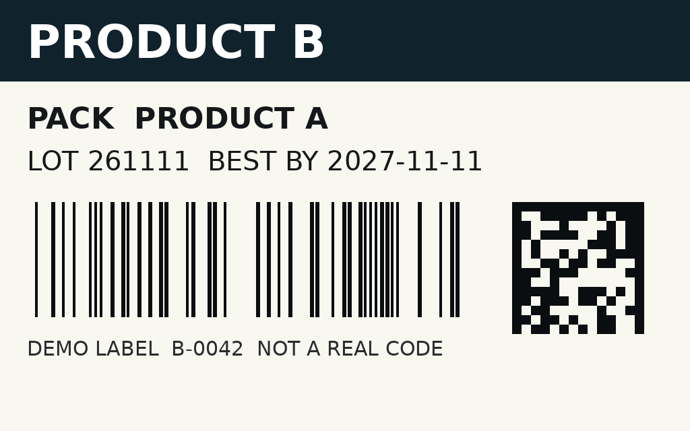
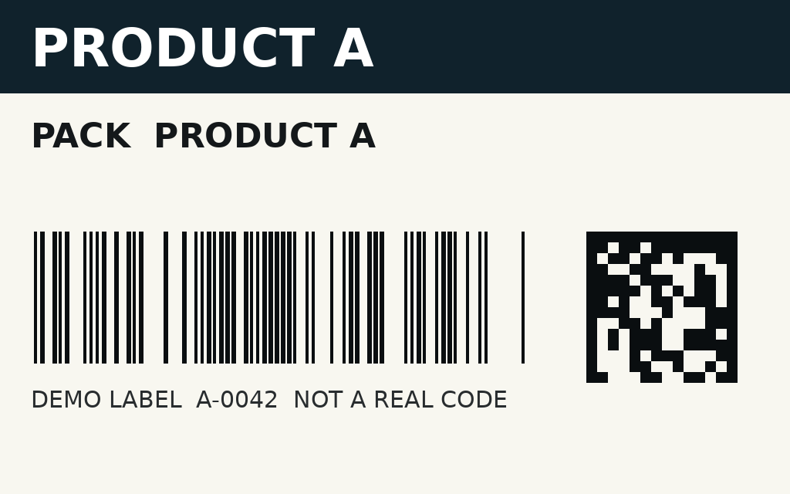
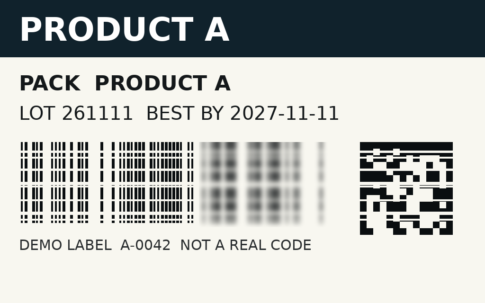
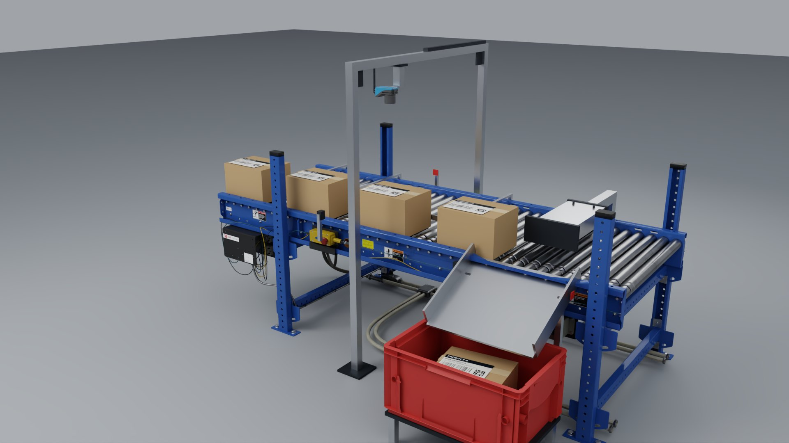
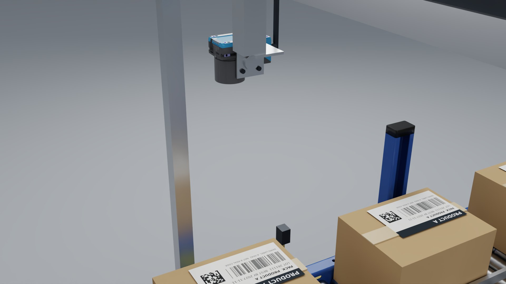
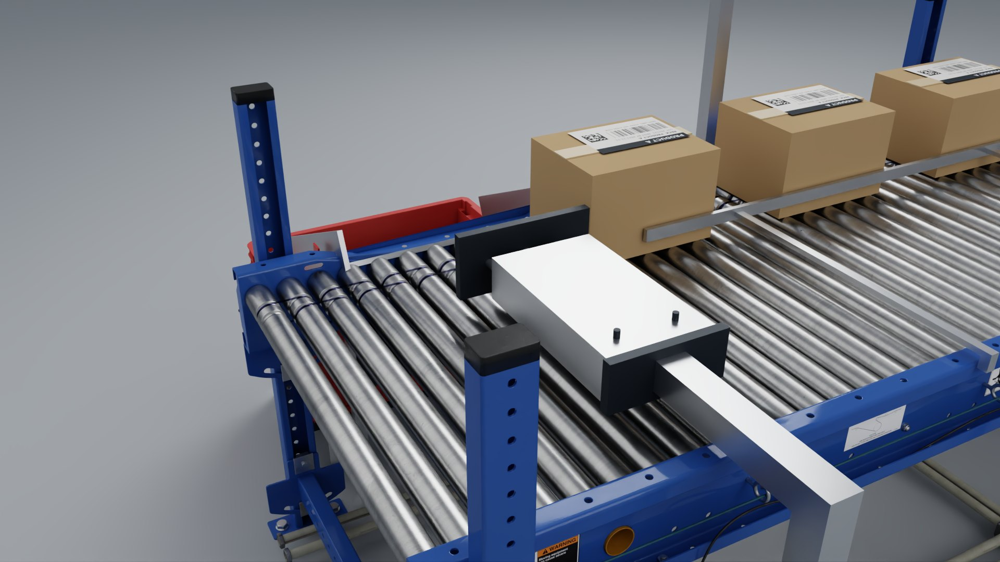

281 x 234 mm field of view
2,464 x 2,048 px sensor with 2.74 µm pixels and a 12 mm lens, mounted 500 mm above the carton top. That gives about 0.11 mm per pixel, so a 0.5 mm barcode bar spans about 4.4 pixels.
LABEL VERIFICATION / SICK INSPECTOR83x
A readable code can still be the wrong label. One vision sensor checks every pack at line speed and pushes only the bad ones off.
WHAT IT CATCHES



ENGINEERING NOTES
Every number below is computed from the same geometry and line settings that drive the 3D model. Sensor data comes from the SICK datasheet for the 5.1 MP colour, 12 mm C-mount variant (V2D8305P-1CCICXAF1SXXXX datasheet). Confirm the variant and lens in a sample trial.
2,464 x 2,048 px sensor with 2.74 µm pixels and a 12 mm lens, mounted 500 mm above the carton top. That gives about 0.11 mm per pixel, so a 0.5 mm barcode bar spans about 4.4 pixels.
The global shutter avoids the skew a rolling shutter would add. To keep motion blur under one pixel at this belt speed, exposure must stay at or below about 150 µs. Check brightness on real samples with the built-in white LED light.
The trigger eye starts the count. The sensor captures at 4,700 counts and the pusher fires at 12,500. A 0.1 mm encoder runs at 7.5 kHz at this speed, under the sensor's 50 kHz encoder input limit. If the belt slows, the reject still hits the right pack.
The Inspector83x has queued outputs delayed by encoder counts, so it can drive the pusher valve directly. A PLC shift register over EtherNet/IP or PROFINET (dual port) also works. A chute eye proves each reject arrived; no confirmation means stop the line.
At 60 packs a minute with a 410 mm gap, the paddle clears the lane before the next pack arrives with that much time to spare. Packs ride registered on the near-side rail, so a guided pneumatic pusher needs only a 285 mm stroke (300 ms out, 300 ms back). This layout tops out near 67 packs a minute. Above that, use a wider pitch or a faster diverter.
IP65 die-cast housing, 24 V DC at 21 W, and 545 g without the lens. Capture runs up to 30 Hz, and the AI-based Intelligent Inspection tools are licensed on the device for OCR, code and presence checks.
NATIVE ISAAC SIM / RTX
Authored on the DGX Spark in OpenUSD. These are native RTX renders, not browser screenshots.



TRY YOUR REAL GOOD AND BAD SAMPLES
Andrew Becker / TCAS
abecker@tcas.com